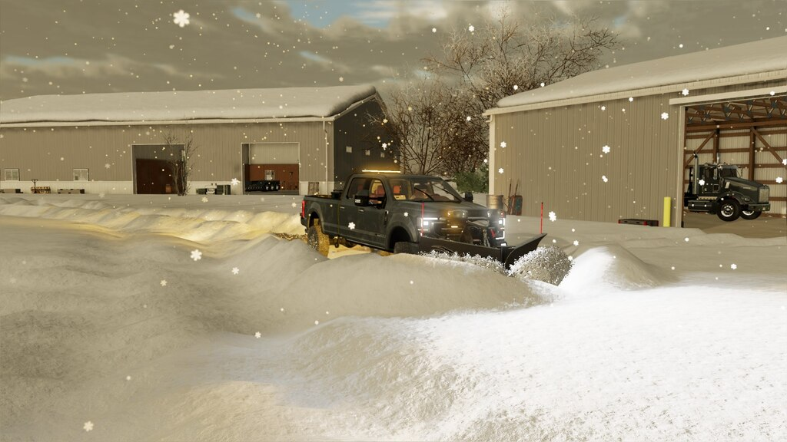
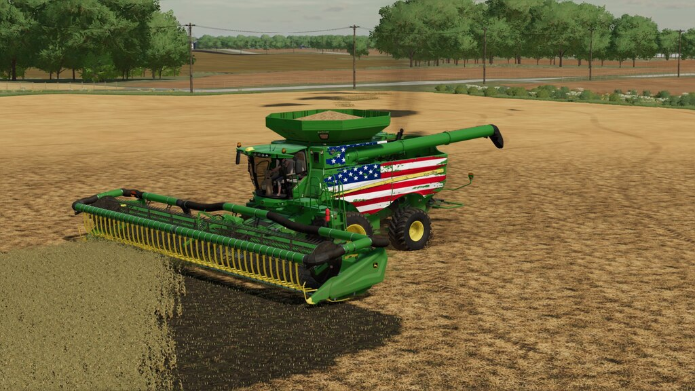
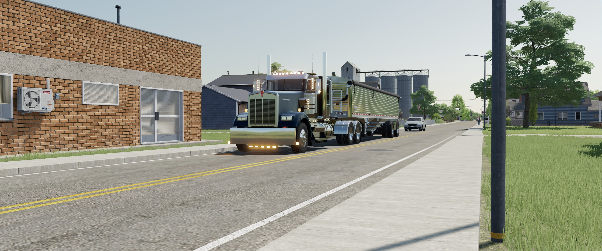
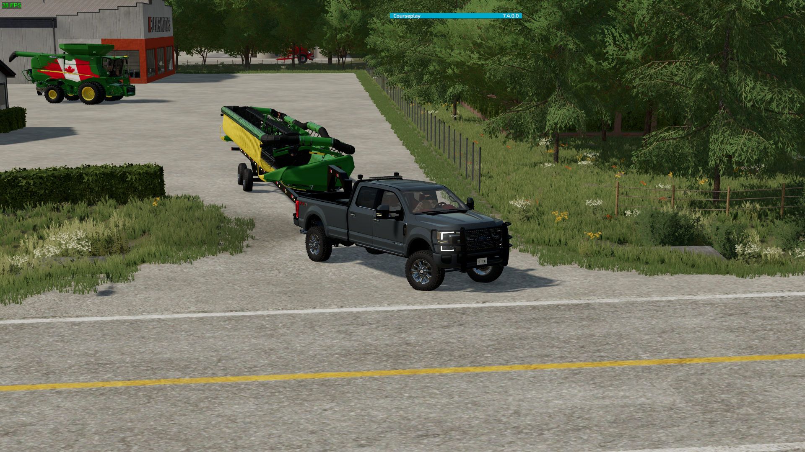

About the Farming Simulator Series
From the first game (2008) to present (2022), Farming Simulator has went through emmense change. After the 1st version, many more tractors were added. In 2013, Case IH was introduced as well as console availability. In 2015, logging was introduced and completley changed the game. In 2017, a drivable train was added to give the player the ability to transport grain and wood with something other than a semi truck. In 2019, an even larger feature was added: Teraforming. Players were now able to completley build a farm from scratch with custom buildings, silos and houses, and a lot more. In 2022, the landscape tool was overhauled and gave the ability to have a slope tool. Another addon in 2022 is the logging expansion. Giant Sequoya trees and a Canadian map was added, giving a Pacific Northwest Logging experience.
Screenshots
   I have been playing since 2013 and these screenshots are my most recent from 2022. The first is me removing the snow from my farm yard. The second is me harvesting wheat. the third is me transporting the wheat with a Kenworth W900b. The fourth is me bringing a grain header to my farm in my 2020 F-350. These are on the Edgewater, Saskachewan Map.